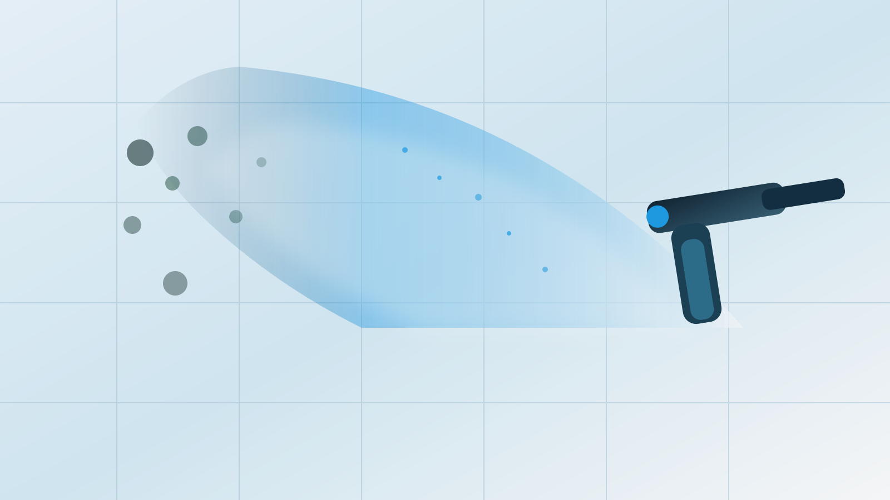

一般のお客様
- 浴室・押入れ・壁紙のしつこいカビにお困りの方
- 市販品やクリーニングで解決しなかった方
- 子どもやペットがいるので安全な施工がしたい方

FRS工法専門施工店
市販品やクリーニングで取れないカビは、素材の奥に残っていることがあります。Kohgaが状態を確認し、FRS工法で対処します。浴室・壁紙・押入れのカビを、写真で無料診断します。
Kohgaは、カビを「拭く」のではなく「菌ごと分解する」FRS工法（商標登録 第5914962号）の専門施工店です。
Cleaning vs FRS
「カビを落とす」と「カビを除去する」は、まったく別のことです。一般的なハウスクリーニングは、目に見えるカビを表面から取り除く作業です。素材の内部に菌糸が残ると、1〜3ヶ月後に再発することがあります。
| ハウスクリーニング | FRS工法（Kohga） | |
|---|---|---|
| アプローチ | 表面を洗浄・漂白 | 素材内部に浸透し菌糸を分解 |
| カビの根への対処 | 届かない | 菌糸まで分解除去を目指す |
| 薬剤の安全性 | 製品により様々 | 食品添加物同等成分 |
| 足場・追加費用 | 高所は別途足場代が必要な場合あり | 基本不要・追加費用なし |
SIAA認証：第三者基準を満たした抗菌・抗ウイルス加工の目印です。
食品添加物同等成分：刺激臭が少なく、家庭や施設でも使いやすい成分です。
Select Your Need
No Scaffold Cost
外壁や高所のカビ・コケ除去では、足場代だけで20〜50万円かかるケースも珍しくありません。FRS工法は特殊な噴霧技術と浸透性薬剤を使用するため、基本的に足場不要で施工できます。
Clear Price
見積もり提示後、ご了承をいただいてから施工開始。見積もり後のキャンセルも費用ゼロです。
カビ除去のみ
仕上げプラン
カビ除去後にFRS-COAT / FRS-COAT BVCを施工し、長期再発抑制を目指します。
写真診断で概算と必要な施工範囲を確認できます。
無料診断で相談するProfessional Proof
FRS工法は、厳格な衛生基準が求められる医療・介護・食品・不動産管理の現場でも活用されています。
SIAA認証コーティングで衛生環境を管理
退去後カビ処理から再入居準備まで対応
HACCP対応の定期防カビメンテナンス
高圧洗浄に頼らない低負荷のカビ・コケ対策
Contact
写真を送るだけでOK。専門スタッフが無料でカビの状態を確認し、最適なプランをご提案します。